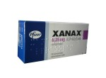
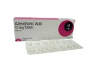
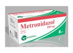

တွဲဖက်မသောက်သုံး သင့်သောအစား အသောက်နှင့်ဆေးဝါးများ

|
Sedatives & Hypnotics (အိပ်ဆေးများ)
ဥပမာ 1. Eszopiclone
2. Zolpidem
စိတ်ဖိစီးမှုများခြင်းကြောင့်ဖြစ်စေ၊ စိတ်ေ၀ဒနာတစ်မျိ...
|

|
Antipsychotics (စိတ်ရောဂါကုဆေးများ)
ဥပမာ 1. Aripiprazole
2. Clozapine
3. Olanzapine
...
....
|
|

|
Anti-anxiety & Panic Disorder Medicines (စိတ်ငြိမ်ဆေး)
ဥပမာ 1. Alprazolam
2. Clonazepam
3. Diazepam
...
......
|
|
|
Antidepressants (စိတ်ကျရောဂါကုဆေး)
. Monoamine Oxidas Inhibitors ( MAOIs စိတ်ကျရောဂါကုဆေး)
ဥပမာ 1. Phenelzine
2. Tranylcypromine
MAOIs ဆေးတွေကို တခြားစိတ်ကျရောဂါကုဆေးတွေ မတိုးတော့တဲ့ စိတ်ကျေ၀ဒနာသည်တွေမှာ အသုံးပြုပါတယ်။
...
|
|
|
Bipolar Disorder Medicines (စိတ်ကျစိတ်ကြွရောဂါကုဆေး)
ဥပမာ 1. Carbamazepine
2. Divalproex Sodium
3. Lamotrigine
4. Lithium
Bipolar Disorder ဆေးတွေကို စိတ်ကျစိတ်ကြွရောဂါမှာ အသုံးပြုပါတယ်။
...
|
|

|
Bisphosphonates (အရိုးပွရောဂါကာကွယ်ကုသဆေး)
ဥပမာ 1. Alendronate sodium
2. Alendronate Sodium + Cholecalciferol
3. ...
........
|

|
Antimycobacterials (TB ရောဂါကုဆေး)
ဥပမာ 1. Ethambutol
2. Isoniazid
3. Rifampin
...
......
|

|
Antifungals (မှိုပိုးသတ်ဆေးများ)
ဥပမာ 1. Fluconazole
2. Itraconazole
3. Posaconazole
...
...
|
|

|
Antibacterials (ဘက်တီးရီးယားပိုးသတ်ဆေးများ)
Metronidazole Antibacterials (Metronidazole ဘက်တီးရီးယားပိုးသတ်ဆေးများ)
ဥပမာ - Metronidazole
Metronidazole ပဋိဇီ၀ပိုးသတ်ဆေးများက ဘက်တီးရီးယားပိုးနဲ့ ကပ်ပါးပိုးကြောင့်ဖြစ်တဲ့ ရောဂါပိုးတွေကို သုတ်သင်ရှင်းလင်းပေးပါတယ်။
.........
|

|
Antiprotozoals (ကပ်ပါးရောဂါပိုးသတ်ဆေး)
ဥပမာ - Tinidazole
Antiprotozoals ဆေးတွေကို ကပ်ပါးရောဂါပိုးတွေ သတ်တဲ့နေရာမှာ အသုံးပြုပါတယ်။
....
|

|
Thyroid Medicines (သိုင်းရွိုက်ဟော်မုန်းဆေးများ)
ဥပမာ - Levothyroxine
Levothyroxine က သိုင်းရွိုက်ဟော်မုန်းအထွက်နည်းတဲ့ရောဂါ (Hypothyroidism) ရဲ့ရောဂါ လက္ခဏာတွေကို...
.....
|